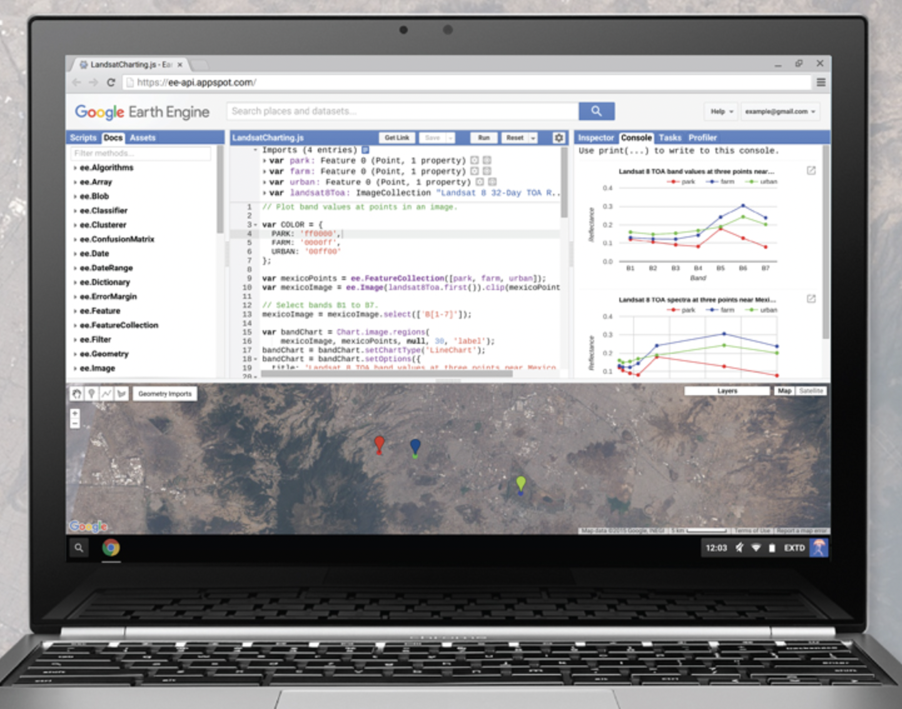
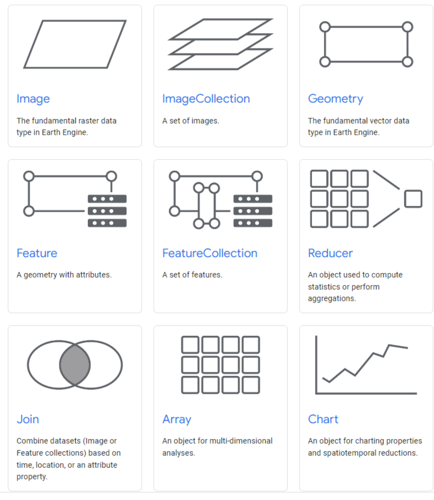
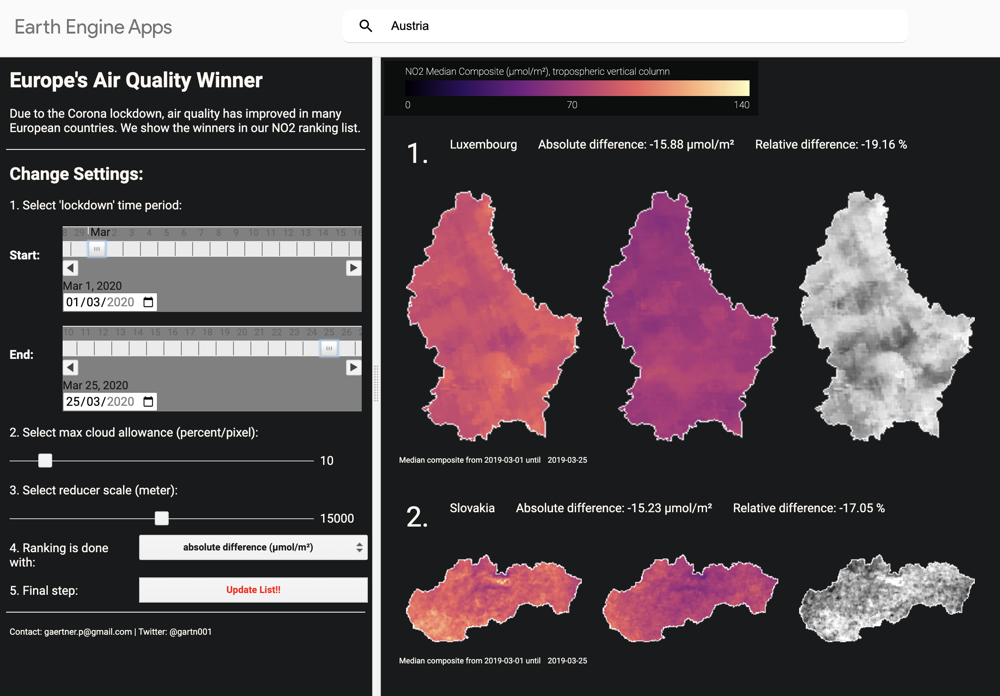

# map
names.map(name => capitalize(name))5 Introduction to Google Earth Engine
5.1 Summary
This weeks, we will talk about one of the most powerful platforms to implement remote sensing applications, which is Google Earth Engine.

Source: Google Earth Engine
5.1.1 Introduction
Google Earth Engine (GEE) is a platform for the cloud-based processing of scientific data. The key feature that attracts the majority of GIS users is its ability to perform large computations extremely quickly, as most remote sensing data are quite huge and it is difficult to conduct research on a very broad region. Moreover, it also provides the visualisation panel that we can run the code and see the output from the map in a minute. The coding language used in the platform is javascript. However, they also provide Google Earth Engine Python API for users who get familiar with python.
The interface of Google Earth Engine platform is shown below:

5.1.2 GEE Terms
Earth engine has its own data types or terms, which are explained as follow:

Source: GEE
- Data types in Google Earth Engine
- Image = Raster
- Feature = Vector
- ImageCollection = Image stack
- FeatureCollection = Feature stack
5.1.3 GEE Programming
The programming language used in GEE is javascript. We can use any basic functions just like what we used to do. Some sets of functions are run on the server side, such as ee.ImageCollection([PATH]), so we can tackle with very large datasets. However, there is a few warnings, which should be aware of. One thing that should be remembered is looping. Don’t use looping function on the server, since it does not allow earth engine to run distributed for a quick process. The alternative function of looping is map().
Example of using map() to capitalise instead of for() for looping:
Moreover, there are many geometry operations to help process data, including joins, zonal statistics (e.g. average temperature per neighbourhood), filtering of images or specific values.
Data Exploration
We can both upload our own datasets, which can be shapefile, into GEE assets and use them or select data from Earth Engine data catalog.
The example of loading data, filtering specific periods and bounding areas is provided below:
var india = ee.FeatureCollection('projects/ucl-remote-sensing/assets/india_boundary')
.filter('GID_1 == "IND.25_1"');
var oneimage_study_area_cloud = ee.ImageCollection('LANDSAT/LC08/C02/T1_L2')
.filterDate('2021-06-01', '2022-10-10')
.filterBounds(india) // Intersecting ROI
.filter(ee.Filter.lt("CLOUD_COVER", 0.1));
Data Pre-processing
There are many functions for processing raster and vector data provided in GEE. We will show examples of some functions that are usually used in the preprocessing steps.
- Mosaic images: taken images according to their order in the collection (last on top)
var mosaic = oneimage_study_area_cloud_scale.mosaic();
var vis_params2 = {
bands: ['SR_B4', 'SR_B3', 'SR_B2'],
min: 0.0,
max: 0.3,
};
Map.addLayer(mosaic, vis_params2, 'spatial mosaic');- Clip images: filter images from a given areas specified in feature/shapefile/vector.
var clip = meanImage.clip(india)
.select(['SR_B1', 'SR_B2', 'SR_B3', 'SR_B4', 'SR_B5', 'SR_B6', 'SR_B7']);
var vis_params3 = {
bands: ['SR_B4', 'SR_B3', 'SR_B2'],
min: 0,
max: 0.3,
};
// map the layer
Map.addLayer(clip, vis_params3, 'clip');- Calculate statistics: such as median
var median = oneimage_study_area_cloud.reduce(ee.Reducer.median());5.2 Applications
After we have finished conducting our own analysis, we can also publish our analysis via Google Earth Engine Apps, which provide ability to turn code into responsive applications. Some great examples are selected to present below:
- Europe’s Air Quality Winner (Source: gaertnerp)

- Summary: This application was built to visualise the improvement of air quality in Europe after the lockdown due to the corona pandemic. The amount of NO2 was captured by remote sensing and shown in chrolopleth map. Users can compare the situation between 2 periods and The difference of NO2 median composite was calculated and shown.
- Pros: it is quite great visualisation that users can understand how much the air quality changes in a minute.
- Cons: it is not allowed to zoom-in to see more details in each specific area.
- NDVI Slider (Source: khaledalshamaa)

- Summary: The developer aims to compare Normalized Difference Vegetation Index (NDVI) between 2 years. The source of data is MODIS, which has the spatial resolution of 250 m and temporal resolution of 16-day.
- Pros: In this work, it is better than the previous work above in aspect that users can zoom-in to see NDVI in specific area.
- Cons: Currently, users can select to view only the average of NDVI of each year. However, NDVI values are quite vary within the same year. If the system has the ability to view data by seasons (e.g. Autumn, Winter) or date picker to let users choose the period they want to see, it will be better.
5.3 Reflection
Tools: I found that Google Earth Engine is a very powerful platform since it provides server side functions and large servers for high computation which is best fit with remote sensing projects that usually require big data for conducting researches. Moreover, it also provides UI for visualising maps from our codes. Before knowing the available of GEE, I found that it is quite hard to conduct remote sensing products since it took a very long time to conduct a research from data collection to data processing. Moreover, Earth Engine Data Catalog is very useful for the use of data. It provides many common remote sensing data that can be used for analysis in many tasks. While I am using many data from Google Earth Engine data datalog, I found that there is the other service offered from AWS called “Earth on AWS”, which also provide remote sensing data in the cloud service too. If there is some data unavailable in EE data catalog, I may check if it is available in AWS service too. Then, further investigation may include make a comparison between 2 platforms.
Applications: Earth Engine App is very convenient for publishing analysis to let other people to see our results. It is also good for exploring data and finding insight. The great part of it is the interactive part which allow users to adjust parameters and see the results.